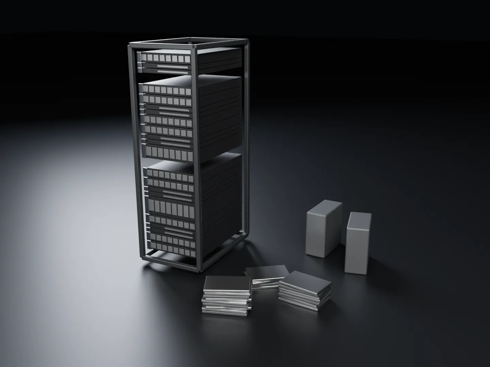
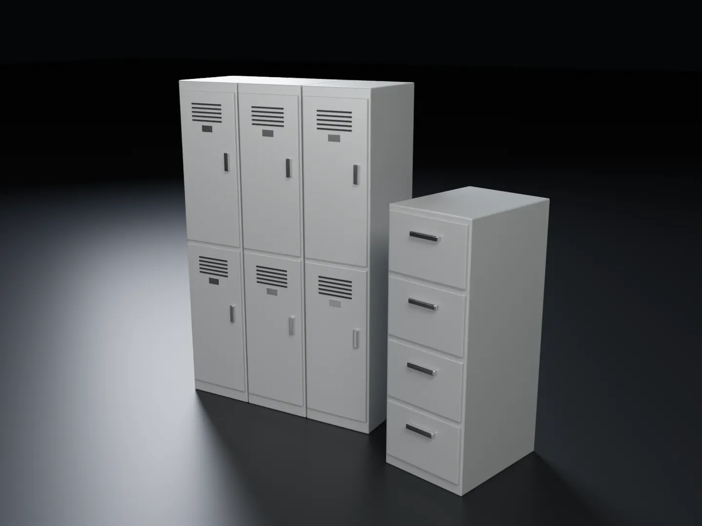
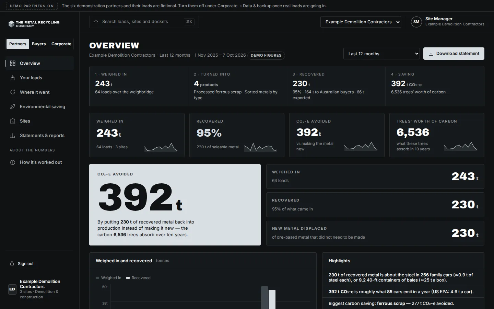

Universities & education
Labs, workshops, IT refreshes. Cleared.
Lockers, shelving, steel furniture, lab benches, workshop machinery, laptops and servers, collected from universities, TAFEs and schools, recycled and reported. One service fee, quoted before we come. Drives out or wiped first.
When campuses call us
The moments metal piles up
Lab refurbishments
Steel and stainless benches, frames, shelving and decontaminated equipment, once the lab has been cleared.
IT refresh cycles
Laptops, desktops, servers, AV and cabling, priced per item or pallet. Your IT team removes or wipes the drives first.
Workshop upgrades
Engineering and trades workshops replacing lathes, mills, welders, benches and tooling.
Building works
Lockers, compactus, seating frames, plant, ductwork and fittings from refurbishments and demolitions.

Built around a campus
Semester breaks, multiple buildings, one booking
- We do the lifting: from labs, upper floors and basements to the truck.
- We work around teaching: semester breaks, after hours and weekends.
- Your data stays with you: drives removed or wiped before we come, confirmed in a signed declaration.
- Lab clearance respected: we collect once your safety team has decontaminated and signed off.
- One service fee: quoted upfront, so it fits a purchase order.

For your sustainability commitments
Campus-by-campus figures you can publish
Most universities publish waste and emissions figures in their sustainability reporting. Every collection we do is weighed over our weighbridge and reported: what was collected, what it weighed, what it became and the carbon avoided, by campus, by building or by year.
Across education
Who we collect from
Universities
Labs, workshops, data rooms, residences and campus-wide refurbishments. One arrangement across every campus.
TAFEs & training providers
Trade workshops, automotive and engineering bays, machinery and tooling upgrades.
Independent schools
Science labs, technology workshops, IT rooms, lockers and building works.
Government schools: usable furniture and equipment should first be offered to other schools under the Department of Education's donation policy. We take what's left: the metal that can't be reused.
Clearing a lab, a workshop or a whole building?
Book a collection, or talk to us about one arrangement across every campus.